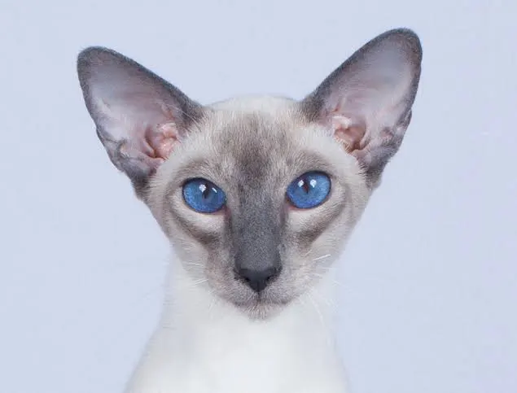

Le chat est un animal très répandu dans les foyers français. Sa popularité vient en partie de son indépendance, appréciée par de nombreux propriétaires.
| Race | Taille | Caractère |
|---|---|---|
| Européen | Moyenne | Sociable et joueur, s'adapte facilement à la vie de famille. |
| Maine Coon | Grande | Calme et affectueux. |
| Siamois | Moyenne | Vif et communicatif, réclame beaucoup d'attention. |
| Persan | Moyenne | Placide. |
| Sacré de Birmanie | Moyenne | tempérament équilibré, particulièrement doux et proche de l'humain. |
Chaque race possède des besoins spécifiques, notamment en matière d'entretien du pelage.
